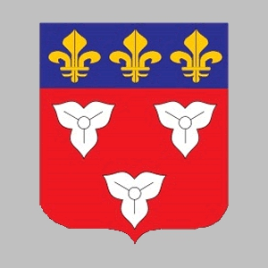

49224469249 Walrada de Orleans
Blev högst 36 år.

Född:
798 Orleans, Loiret, Frankrike.
Död:
834 Worms, Rheinland-Pfalz, Tyskland.
Barn med
49224469248 Count Robert III de Wormsgau (785 - 832)
Barn:
Robert (the Strong) of France (820 - 866)
Personhistoria
Årtal
Ålder
Händelse
798
Födelse 798 Orleans, Loiret, Frankrike
820
Sonen
24612234624 Duke Robert (the Strong) of France
föds 820 Anjou, France
[1]
832
Partnern
49224469248 Count Robert III de Wormsgau
dör 832 Worms, Rheinland-Pfalz, Tyskland
834
Död 834 Worms, Rheinland-Pfalz, Tyskland
Källor
[1]
Wikipedia